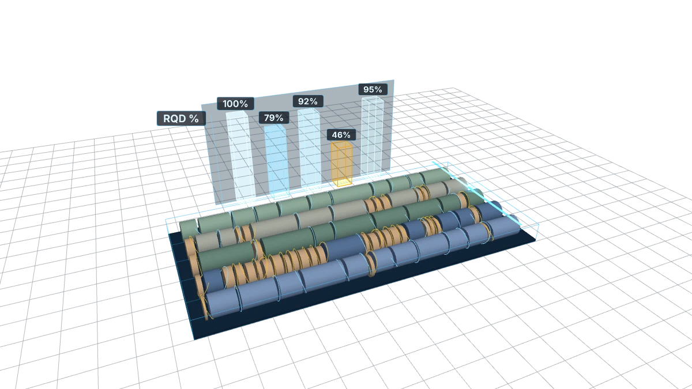

TCR, SCR, RQD автомат тооцоо
Гүйлтийн урт, гарцын хэмжилтээс хувийг шууд тооцож, гар тооцооны алдааг арилгана.
Геотехникийн цахим лог
Гүйлт бүрийн гарц, RQD, хагарлын давтамж, тасралтын шинж чанарыг хээр дээр бүртгэж, тооцоог систем өөрөө хийнэ. Туршилтын дээжийг сонгож, лабораторийн үр дүнтэй нь холбоно.

Боломжууд
Гүйлтийн урт, гарцын хэмжилтээс хувийг шууд тооцож, гар тооцооны алдааг арилгана.
Метр тутмын хагарлын тоо, эвдэрсэн бүсийг интервалаар бүртгэнэ.
Үе, хагарлын төрөл, α/β өнцөг, барзгаржилт, дүүргэгч, өгөршлийг кодоор.
Хээрийн бат бэхийн үнэлгээ, цэгэн ачааллын туршилтын үр дүнг бүртгэнэ.
UCS, суналт, гурван тэнхлэгт, шууд зүсэлт, нягт, чийгийн туршилтад дээж сонгож, үр дүнтэй нь холбоно.
Гүйлт бүрийн керний зургийг гүнээр нь хайж харна.
Ажлын урсгал
Гүйлтийн эхлэл, төгсгөл, гарцын уртыг оруулна.
10 см-ээс урт хэсгүүд, бүтэн диаметртэй кернийг бүртгэнэ.
TCR, SCR, RQD, чулуулгийн чанарын ангилал тэр даруй гарна.
Сонгосон дээжийг QR-ээр тээвэрлэж, лабораторийн үр дүнтэй холбоно.
Жишээ
Хээрийн хэмжилтээс TCR, SCR, RQD болон чулуулгийн чанарын ангилал (Deere) автоматаар гарна.
| Гүйлт, м | Урт, м | Гарц, м | ≥10 см, м | TCR % | SCR % | RQD % | Чанар |
|---|---|---|---|---|---|---|---|
| 120.0–123.0 | 3.00 | 2.95 | 2.71 | 98 | 93 | 90 | Маш сайн |
| 123.0–126.0 | 3.00 | 2.90 | 2.16 | 97 | 80 | 72 | Дунд |
| 126.0–129.0 | 3.00 | 2.70 | 1.29 | 90 | 60 | 43 | Муу |
| 129.0–132.0 | 3.00 | 2.40 | 0.57 | 80 | 35 | 19 | Маш муу |
| 132.0–135.0 | 3.00 | 2.85 | 1.74 | 95 | 70 | 58 | Дунд |
| 135.0–138.0 | 3.00 | 3.00 | 2.49 | 100 | 92 | 83 | Сайн |
| 138.0–141.0 | 3.00 | 2.98 | 2.82 | 99 | 97 | 94 | Маш сайн |
RQD = 10 см-ээс урт хэсгүүдийн нийлбэр ÷ гүйлтийн урт × 100. TCR — нийт гарц, SCR — бүтэн диаметртэй керн.
Жишээг зохиомол өгөгдлөөр харуулав.
Бидэнтэй холбогдоорой. Танай ажлын урсгалыг судалж, тохирох шийдлийг санал болгоно.